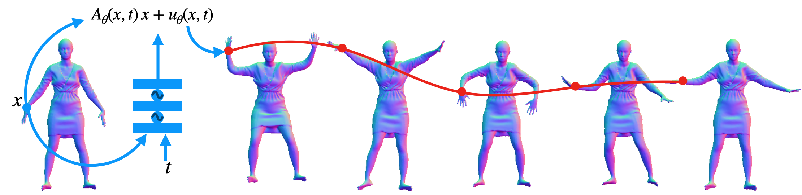

Yan Zhang2*, Sergey Prokudin1,3, Marko Mihajlovic1, Qianli Ma4*, Siyu Tang1
1 ETH Zürich, 2 Meshcapade, 3 ROCS, University Hospital Balgrist, University of Zürich, 4 Nvidia
Understanding the dynamics of generic 3D scenes is fundamentally challenging in computer vision, essential in enhancing applications related to scene reconstruction, motion tracking, and avatar creation. In this work, we address the task as the problem of inferring dense, long-range motion of 3D points. By observing a set of point trajectories, we aim to learn an implicit motion field parameterized by a neural network to predict the movement of novel points within the same domain, without relying on any data-driven or scene-specific priors. To achieve this, our approach builds upon the recently introduced dynamic point field model that learns smooth deformation fields between the canonical frame and individual observation frames. However, temporal consistency between consecutive frames is neglected, and the number of required parameters increases linearly with the sequence length due to per-frame modeling. To address these shortcomings, we exploit the intrinsic regularization provided by SIREN, and modify the input layer to produce a spatiotemporally smooth motion field. Additionally, we analyze the motion field Jacobian matrix, and discover that the motion degrees of freedom (DOFs) in an infinitesimal area around a point and the network hidden variables have different behaviors to affect the model's representational power. This enables us to improve the model representation capability while retaining the model compactness. Furthermore, to reduce the risk of overfitting, we introduce a regularization term based on the assumption of piece-wise motion smoothness. Our experiments assess the model's performance in predicting unseen point trajectories and its application in temporal mesh alignment with guidance. The results demonstrate its superiority and effectiveness. The code and data for the project are publicly available.
@inproceedings{DOMA,
title = {Degrees of Freedom Matter: Inferring Dynamics from Point Trajectories},
author = {Yan Zhang and Sergey Prokudin and Marko Mihajlovic and Qianli Ma and Siyu Tang},
booktitle = {Proceedings IEEE Conf. on Computer Vision and Pattern Recognition (CVPR)},
year = {2024}
}